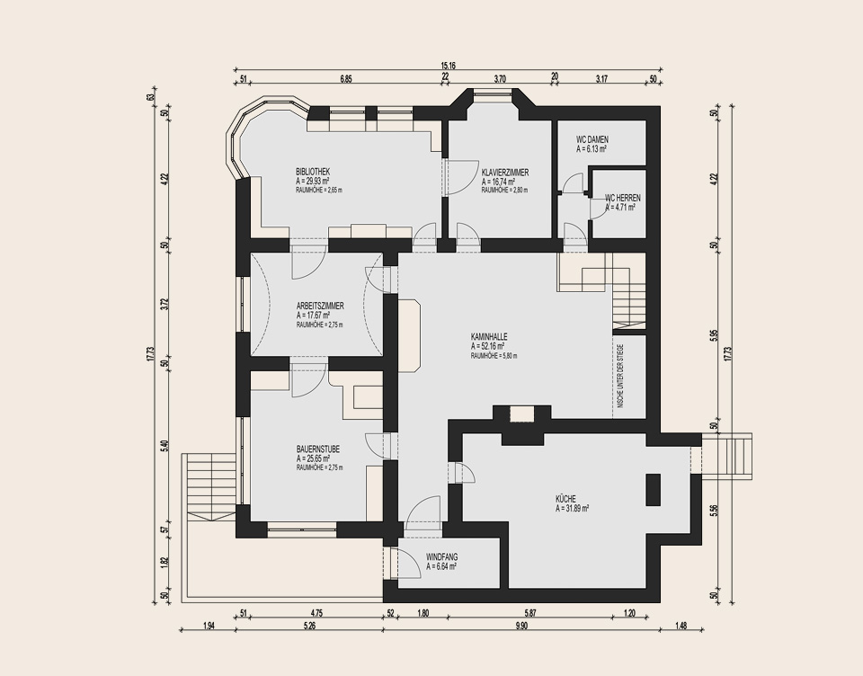

婚礼筹备记录 · 只读版
To Do
正在读取待办…
婚礼流程草案
· Museum Restaurant Cafe
筹备参考。时间、具体场地布置、节目和餐饮待确认。
-
迎宾
到场后先打个招呼，吃一点面包类小食。仪式前只供应啤酒和软饮。
-
破冰活动
从几个轻松的问题开始，让大家互相认识。
- 你叫什么？
- 你希望大家怎么记住你？
- 来 St. Anton 的路上，有没有发生什么有意思的事？
- 这个婚礼周末，你最期待什么？
-
下午 3:30–4:00
户外婚礼仪式
天气允许的话，户外仪式预计在这个时段开始。
-
小食与闲聊
仪式后以香槟举杯，再上第二轮小食。服务员会端着托盘在宾客间走动，菜品可考虑牛肉塔塔。 等大家拿到饮料后，可以在这段时间拍宾客合照。
-
池边与草地拍照
宾客继续享用迎宾酒和小食，两位新郎抽空拍一组照。池边和小桥适合近景，地图右侧的草地适合拍带山景的广角照。先拍哪边看现场光线。
-
晚餐
晚餐结束后开始供应红葡萄酒和白葡萄酒。
-
晚间活动 · 待定
备选有 KTV、舞会，或坐下来聊聊、吐槽吐槽我们俩。
-
切婚礼蛋糕
一起切蛋糕。如果晚些时候想加一轮咸点，可以考虑奥地利式 Leberkäsesemmel（夹烤肉糕的小面包）。
餐酒菜单
Museum Restaurant–Café · 筹备参考。场地方说明这些是当时的菜单和价格，2027 年需要重新确认。
场地提供的餐酒安排参考
- 约 60 人可以安排多道式菜单或自助餐。可组合菜品，主菜通常提供肉或鱼两种选择。可为过敏、素食和纯素宾客提供相应餐点。
- 旧婚宴示例酒水套餐为 €35/人、2.5 小时，含杯装葡萄酒、啤酒、软饮、矿泉水和咖啡。每加一小时 €15/人。Prosecco 和 Sekt 另外计费，分别 €45 与 €58/瓶，邮件估算每瓶约倒 7 杯。邮件没有确认 2027 年是否沿用。
- 往来邮件提到可安排试菜，也提到后续会提供新的冬季团体菜单。当前文件以已收到的菜单为准。
2026 夏季晚餐样例与菜品
套餐均为每人价，主菜任选一款。另选菜品未列单价。
| 样例套餐 | 三道 · 汤 | 三道 · 前菜 | 四道 · 无雪葩 | 五道 · 含雪葩 |
|---|---|---|---|---|
| 菜单 1 | €63 | €73 | €82 | €87 |
| 菜单 2 | €58 | €69 | €79 | €84 |
| 菜单 3 | €65 | €75 | €84 | €89 |
Logan 前菜试菜清单
- 温热山羊鲜奶酪配绿芦笋（婚宴菜单 1）。试吃奶酪的风味是否太浓，以及番茄油醋汁能否平衡整体。
- 蒂罗尔式 Vitello Tonnato（婚宴菜单 3）。菜单写的是香草猪肉配土豆芥末酱，试菜时可问厨师有没有金枪鱼酱或其他鱼类成分。
- 蒂罗尔式鲑鳟 Ceviche（婚宴另选）。清爽备选，试吃时留意酸度和辣根的分量。若选择鱼做主菜，也可比较整套餐是否会重复。
牛肉塔塔留在仪式后小食（€4.50/件）。最后的前菜等试菜和主菜搭配确定后再定。
汤
| 菜品 | 来源 | 想试菜 |
|---|---|---|
| 牛尾清汤配两种丸子、蔬菜丝和细香葱 | 菜单 1 | 想试 |
| 土豆浓汤配炒蘑菇、培根、面包丁和鼠尾草黄油 | 菜单 2 | — |
| 芦笋浓汤配乳清奶酪野香草酥角 | 菜单 3 | 想试 |
| 蔬菜清汤配粗粒小麦丸和细香葱 | 另选 | — |
| 菊芋浓汤配葡萄籽油和酥皮棒 | 另选 | 想试 |
前菜
| 菜品 | 来源 | 想试菜 |
|---|---|---|
| 温热山羊鲜奶酪配腌绿芦笋、油封杏鲍菇和番茄油醋汁 | 菜单 1 | 想试 |
| 牛肉塔塔配细香葱酱、野香草沙拉和 Arlbergspitz 面包 | 菜单 2 | — |
| 蒂罗尔式 Vitello Tonnato，粉红香草猪肉配土豆芥末酱、羊生菜和腌萝卜 | 菜单 3 | 想试 |
| 蒂罗尔式鲑鳟 Ceviche，配野芹、甜椒、辣根和腌黄瓜 | 另选 | 想试 |
| 烟熏鹅胸配夏季叶菜、鸡油菌和时蔬 | 另选 | — |
雪葩
| 菜品 | 来源 | 想试菜 |
|---|---|---|
| 黑加仑雪葩配酒庄起泡酒 | 菜单 1 | — |
| 葡萄园桃雪葩配 Lillet | 菜单 2 | 想试 |
| 梨雪葩配 Wibitter | 菜单 3 | — |
鱼主菜
| 菜品 | 来源 | 想试菜 |
|---|---|---|
| 煎红点鲑配芝麻菜烩饭、西葫芦和番茄汁 | 菜单 1 | — |
| 煎鲑鳟配绿芦笋、番茄藏红花汤汁和香草土豆团 | 菜单 2 | — |
| 煎梭鲈配两种米饭、荷兰豆和黄椒泥 | 菜单 3 | — |
| 煎鳟鱼配奶油土豆韭葱、胡萝卜泡沫和香草油 | 另选 | — |
肉主菜
| 菜品 | 来源 | 想试菜 |
|---|---|---|
| 粉红小牛背肉配土豆泥、罗马花椰菜和松露奶油汁 | 菜单 1 | — |
| 煎玉米鸡胸配奶油鸡油菌、糖渍胡萝卜和香草肉汁 | 菜单 2 | — |
| 粉红烤牛西冷配波尔多红酒汁、奶油土豆和杏仁西兰花 | 菜单 3 | — |
| 煎鸭胸配奶油皱叶甘蓝、榛子土豆团和杜松百里香肉汁 | 另选 | — |
| 粉红牛菲力配松露玉米糊、抱子甘蓝和浓缩肉汁 | 另选 | — |
| 慢炖小牛颊配原汁、炖根茎蔬菜和土豆泥 | 另选 | — |
甜品
| 菜品 | 来源 | 想试菜 |
|---|---|---|
| 果仁巧克力冰糕裹年轮蛋糕，配草莓和大黄 | 菜单 1 | — |
| 焦糖布丁配热莓果夹心和酸奶冰淇淋 | 菜单 2 | — |
| 榛子牛轧糖挞配 Amaretto 酸樱桃和巧克力碎冰淇淋 | 菜单 3 | — |
| 奥地利奶酪拼盘配两款水果芥末酱 | 另选 | — |
| 罂粟籽粗粒小麦布丁配黑加仑无花果和酸奶冰淇淋 | 另选 | — |
| 提拉米苏配酸樱桃和百利甜夹心巧克力 | 另选 | — |
迎宾与仪式后小食
| 类别 | 可选菜品 | 单价 |
|---|---|---|
| 经典面包小点 | Liptauer 香料奶酪抹酱；香草鲜奶酪；火腿；奶酪；猪油渣抹酱；烟熏培根；鸡蛋抹酱 | €3.20/件 |
| 精致面包小点 | 牛肉塔塔；烟熏三文鱼；烤牛肉；番茄马苏里拉烤面包；南蒂罗尔火腿蜜瓜；松露布里奶酪配酸甜酱 | €4.50/件 |
| 热小食 | 脆虾；蘑菇酥皮盅；鸡肉串；洛林咸派；迷你汉堡；乳清奶酪菠菜酥角；迷你春卷 | €4.50/件 |
| 甜小食 | 迷你苹果卷；巧克力蛋糕；水果挞；巧克力慕斯；李子蛋糕 | €3.20/件 |
| 厨房特制 | 蒂罗尔牛肉和蘑菇意式饺子配山地奶酪、焦化黄油、细香葱和炒蘑菇 | €4.50/件 |
| 厨房特制 | 腌牛臀尖肉配根茎蔬菜、面包丁、洋葱、南瓜籽和水芹 | €4.50/件 |
| 厨房特制 | 山地奶酪小点配苹果芥末酱和焦糖坚果 | €3.20/件 |
日常菜单与食客反馈
餐厅官网餐饮介绍 ↗官网日常点菜菜单 ↗Google Maps 评论与照片 ↗
Google 评论提到的菜
2026 年 11 月 20 日查阅时，Google Maps 显示 4.5/5、360 条评价。下表的提及次数来自 Google 显示的主题标签，部分菜另有食客文字点评或标名照片。照片只记录可确认菜名的例子。
| 菜品 | Google 评论或照片 | 菜单出处与参考价 |
|---|---|---|
| 焦糖布丁 Crème brûlée | 主题标签 5 次；是讨论最多的明确菜名 | 官网 €13.50；婚宴菜单 2，配热莓果和酸奶冰淇淋 |
| 鹿肉 Venison | 主题标签 3 次；有食客明确推荐 | 官网为花楸果与金酒酱鹿肉炖菜 €39.80；婚宴菜单未列 |
| Tafelspitz 水煮牛肉 | 主题标签 3 次；有一张明确标注菜名的食客实拍 | 官网主菜 €36.80；婚宴小食有腌 Tafelspitz €4.50/件，做法不同 |
| 牛肉塔塔 Beef Tartare | 主题标签 2 次；有一张明确标注菜名的食客实拍 | 官网前菜 €24.50；婚宴菜单 2 的前菜，也有小食版 €4.50/件 |
| Heiße Liebe | 有食客点评时推荐，英文评论写作 Hot Love | 官网冰淇淋甜品 €8.90；婚宴菜单未列 |
官网日常点菜
以下为当时页面显示的日常单点价格。可以作为试菜或加菜的参考，婚宴供应和报价需向场地确认。
前菜和汤 · 官网
| 菜品 | 官网单点价 | 与婚宴 PDF 的对应 |
|---|---|---|
| 什锦生菜沙拉 | €9.80 | — |
| 温热山羊鲜奶酪配南瓜酸甜酱 | €23.80 | 菜单 1 有山羊鲜奶酪配芦笋，做法不同 |
| 本地牛肉塔塔 | €24.50 | 菜单 2 前菜；小食版 €4.50/件 |
| 黄西葫芦浓汤 | €13.50 | — |
| 牛尾清汤 | €14.50 | 菜单 1 有牛尾清汤 |
主菜和素食 · 官网
| 菜品 | 官网单点价 | 与婚宴 PDF 的对应 |
|---|---|---|
| 自制牛肉与牛肝菌意式饺子 | 小份 €23.50 / 标准份 €33.50 | 婚宴有牛肉蘑菇意式饺子小食 €4.50/件，配料不同 |
| 法式黄油煎鳟鱼 | €35.70 | 婚宴另选主菜有煎鳟鱼，配料不同 |
| 传统 Tafelspitz 水煮牛肉 | €36.80 | 婚宴有腌 Tafelspitz 小食 €4.50/件，做法不同 |
| 香草饲养猪肉维也纳炸排 | €29.50 | — |
| 小牛肉维也纳炸排 | €37.50 | — |
| 花楸果与金酒酱鹿肉炖菜 | €39.80 | — |
| 粉红煎鸭胸配炒抱子甘蓝 | €47.50 | 婚宴另选有鸭胸配皱叶甘蓝，做法不同 |
| 香草壳烤羊鞍 | €53.50 | — |
| 粉红烤本地牛菲力尖 | €59.50 | 婚宴另选有粉红牛菲力，做法不同 |
| 蒂罗尔山地奶酪根茎蔬菜烩饭 | 小份 €19.50 / 标准份 €29.50 | 官网可选松露菠菜或蘑菇 |
| 其他素食及纯素餐 | 询价 | 婚宴同样可询 |
儿童菜 · 官网
| 菜品 | 官网单点价 | 与婚宴 PDF 的对应 |
|---|---|---|
| 牛肉清汤配香草煎饼丝 | €8.50 | 日常儿童菜单 |
| 细意面配肉酱和山地奶酪 | €15.70 | 日常儿童菜单 |
| 儿童猪肉维也纳炸排配薯条 | €17.50 | 日常儿童菜单 |
| 煎鳟鱼 | €18.80 | 日常儿童菜单 |
奶酪和甜品 · 官网
| 菜品 | 官网单点价 | 与婚宴 PDF 的对应 |
|---|---|---|
| 奥地利熟成奶酪拼盘 | €13.50 | 婚宴另选有奥地利奶酪拼盘 |
| 热野莓夹心焦糖布丁 | €13.50 | 菜单 2 焦糖布丁 |
| 层叠蛋糕裹果仁巧克力与牛轧糖冰糕 | €15.80 | 菜单 1 有类似冰糕，婚宴配草莓和大黄 |
| 本地雪葩或冰淇淋 | €2.60/球 | 婚宴雪葩另列，部分搭配酒 |
| Coupe Denmark 冰淇淋杯 | €8.90 | — |
| 坚果冰淇淋杯 | €9.80 | — |
| Heiße Liebe 冰淇淋甜品 | €8.90 | — |
| 冰咖啡 | €8.90 | — |
| 酸樱桃与蛋奶酒冰淇淋杯 | €9.80 | — |
| 混合冰淇淋 | €8.40 | — |
饮料单
另可询 Sekt 加黑加仑利口酒或 Aperol、加杏汁或橙汁的 Sekt（按瓶计）、Campari Soda 或 Orange、时令水果潘趣、开胃葡萄酒、热红酒和自制热潘趣。婚宴菜单没有为这些搭配单独报价。
饮料单价格按标注的杯量或瓶量。Perrier-Jouët Belle Époque 在饮料单和酒单分别列 €245 与 €295，年份或版本可能不同，报价待确认。
软饮、果汁与水
| 饮品 | 规格 | 单价 |
|---|---|---|
| 软饮（Almdudler、Fanta、Sprite、可乐、零度可乐） | 0,33l | €4.90 |
| Tonic Water, Bitter Lemon, Ginger Ale | 0,125l | €4.90 |
| Red Bull | 0,25l | €5.60 |
| Rauch 果汁（苹果、黑加仑、杏、橙、芒果、番茄） | 0,2l | €4.70 |
| fruit Juices with sparkling water | 0,25l | €4.90 |
| fruit Juices with sparkling water | 0,5l | €6.90 |
| Eistee Zitrone oder Pfirsich | 0,33l | €4.90 |
| Arlberg Quell Wellwasser · still oder prickelnd / still or sparkling | 0,5l | €4.60 |
| Arlberg Quell Wellwasser · still oder prickelnd / still or sparkling | 1l | €7.90 |
| Mineralwasser · still oder prickelnd / still or sparkling | 0,33l | €4.80 |
| Mineralwasser · still oder prickelnd / still or sparkling | 0,7l | €9.50 |
| Skiwasser / Soda Zitrone | 0,25l | €3.80 |
| Skiwasser / Soda Zitrone | 0,5l | €5.80 |
生啤
| 饮品 | 规格 | 单价 |
|---|---|---|
| Stiegl Pils | 0,2l | €3.90 |
| Stiegl Pils | 0,3l | €5.30 |
| Stiegl Pils | 0,5l | €7.60 |
| Stiegl Radler | 0,3l | €5.20 |
| Stiegl Radler | 0,5l | €7.30 |
| Stiegl Weiße naturtrüb Weizenbier | 0,3l | €5.70 |
| Stiegl Weiße naturtrüb Weizenbier | 0,5l | €7.90 |
瓶装和无酒精啤酒
| 饮品 | 规格 | 单价 |
|---|---|---|
| Zillertal Tyroler Imperial Zwickl | 0,33l | €5.80 |
| Zillertal Schwarzes | 0,33l | €5.80 |
| Stiegl Alkoholfrei /alcohol-free unfiltered | 0,5l | €6.90 |
| Stiegl Weiße Alkoholfrei /Wheat Beer alcohol-free | 0,5l | €7.20 |
开胃酒和调酒
| 饮品 | 规格 | 单价 |
|---|---|---|
| Vodka & Bitter Lemon | — | €11.80 |
| Granta Bitter (Preiselbeerlikör& Bitter Lemon) | — | €11.90 |
| Gin & Tonic · Bombay Sapphire Gin | — | €13.80 |
| Gin & Tonic · Maas Gin aus Tyrol | — | €16.80 |
| Gin & Tonic · Wien Gin “Vienna Dry” | — | €18.70 |
| Gin & Tonic · Glendalough Wild Botanical Gin | — | €18.70 |
| Gin & Tonic · Glendalough Rose Gin | — | €18.70 |
| Martini Bianco or Rosso | 5 cl | €6.80 |
| Sherry Jalifa Solera Especial 30y | 5cl | €8.90 |
| Hugo | — | €8.90 |
| Aperol Spritz | — | €9.50 |
| Kaiserspritzer Rosé | — | €8.90 |
| Campari Soda or Orange | — | €8.50 |
起泡酒与香槟
| 饮品 | 规格 | 单价 |
|---|---|---|
| Prosecco superiore DOCG spumante | 0,1l | €6.50 |
| Prosecco superiore DOCG Spumante | 0,75 l | €45.00 |
| Sekt Brut Bründlmayer | 0,1l | €8.90 |
| Kir Royal mit Sekt und Cassis Likör | 0,1l | €9.80 |
| Sekt Brut Bründlmayer klassiche Flaschengärung | 0,75 l | €58.00 |
| Pertois–Lebrun L’Extravertie Blanc de Blancs Brut | 0,75l | €95.00 |
| Champagner Castelnau Reserve Brut | 0,75l | €149.00 |
| Champagner Gosset Extra Brut | 0,75l | €118.00 |
| Champagner Gosset Grande Rosé Brut | 0,75l | €135.00 |
| Perrier-Jouët Belle Époque Brut 2013（饮料单） | 0,75l | €245.00 |
杯装白葡萄酒
| 饮品 | 规格 | 单价 |
|---|---|---|
| Grüner Veltliner DAC | 1/8l | €6.80 |
| Weissburgunder | 1/8l | €7.90 |
| Riesling | 1/8l | €8.40 |
| Sauvignon Blanc | 1/8l | €8.90 |
杯装桃红葡萄酒
| 饮品 | 规格 | 单价 |
|---|---|---|
| Rosé | 1/8l | €6.80 |
杯装红葡萄酒
| 饮品 | 规格 | 单价 |
|---|---|---|
| Zweigelt Reserve | 1/8l | €6.80 |
| Blaufränkisch | 1/8l | €7.20 |
| Pinot Noir | 1/8l | €8.30 |
| Cuvée Q2 (BF,CS,SY) | 1/8l | €8.90 |
甜酒和波特
| 饮品 | 规格 | 单价 |
|---|---|---|
| Süsse Auslese Art meets sweet | 5 cl | €4.80 |
| Portwein Tawny Warre´s King´s | 5 cl | €7.20 |
咖啡、茶与热饮
| 饮品 | 规格 | 单价 |
|---|---|---|
| Espresso | — | €3.60 |
| Doppelter/ Double Espresso | — | €5.80 |
| Espresso Macchiato | — | €3.90 |
| Doppelter/ Double Espresso Macchiato | — | €5.90 |
| Verlängerter / Coffee | — | €4.50 |
| Melange / Milk Coffee | — | €4.90 |
| Cappuccino | — | €4.90 |
| Latte Macchiato | — | €6.20 |
| Irish Coffee | — | €11.50 |
| Flüssiger Apfelstrudel / Liquid apple strudel | — | €9.50 |
| Kakao mit Schlagobers / Hot Chocolate with whipped cream | — | €6.80 |
| Mit einem Schuss Likör / With a dash of liqueur | — | €9.60 |
| Bio - Teespezialitäten serviert in der Teekanne | — | €7.90 |
餐后苦酒
| 饮品 | 规格 | 单价 |
|---|---|---|
| Fernet Branca | 4 cl | €5.90 |
| Averna | 4 cl | €5.90 |
| Ramazzotti | 4 cl | €5.90 |
| Jägermeister | 2 cl | €3.90 |
利口酒
| 饮品 | 规格 | 单价 |
|---|---|---|
| Baileys | 4 cl | €5.80 |
| Amaretto di Saronno | 4 cl | €6.30 |
| Cointreau | 4 cl | €6.30 |
| Weichsel / Sour Cherries Likör Maas | 2 cl | €4.90 |
果味蒸馏酒
| 饮品 | 规格 | 单价 |
|---|---|---|
| Williams Birne / Williams pear | 2 cl | €3.90 |
| Marille / Apricot | 2 cl | €3.90 |
| Haselnuss / Hazelnut | 2 cl | €3.90 |
精选蒸馏酒
| 饮品 | 规格 | 单价 |
|---|---|---|
| Grappa Moscato | 2 cl | €6.80 |
| Grappa di Traminer Capovilla | 2 cl | €8.90 |
| Apfel Topaz / Apple Maas | 2 cl | €5.90 |
| Tiroler Bergmarille / Apricot Maas | 2 cl | €6.90 |
| Zwetschke / Plum Maas | 2 cl | €6.90 |
| Zirben Geist / Pine Maas | 2 cl | €7.90 |
| Quitte/Quince Maas | 2 cl | €8.90 |
| Waldhimbeere /Forest Raspberry Maas | 2 cl | €14.90 |
| Alexander Birne / Pear Jakoben Hof | 2 cl | €8.60 |
| Vogelbeere / Rowanberry Jakoben Hof | 2 cl | €8.90 |
| Enzian / Gentian Jakoben Hof | 2 cl | €8.90 |
| Mehlbeere / Rowan berry Jakoben Hof | 2 cl | €14.90 |
烈酒
| 饮品 | 规格 | 单价 |
|---|---|---|
| Vodka | 4 cl | €6.90 |
| Tullamore Dew | 4 cl | €7.50 |
| Jack Daniels Tennessee | 4 cl | €7.80 |
| Cragganmore – Speyside Single Malt 12y | 4 cl | €13.90 |
| Glenkinchie-Lowland Single Malt 10y | 4 cl | €14.50 |
| Glendalough Pot Still Irish | 4 cl | €17.50 |
| Lagavulin-Islay Single Malt 16y | 4 cl | €26.50 |
| Calvados Pere Magloire V.S.O.P. | 4 cl | €9.50 |
| Cognac Frapin V.S.O.P | 4 cl | €18.50 |
| Ron Barcelo Imperial Dominicano | 4 cl | €13.70 |
| Ron Zacapa Gran Reserva Rum 23 y | 4 cl | €18.50 |
| Tequila Anejo Padre Azul | 4 cl | €29.30 |
完整酒单
酒名、年份与价格按原酒单记录，酒款库存需向场地确认。
珍藏酒 · 第 2 页
| 酒款 | 规格 | 单价 |
|---|---|---|
| 2016 Grüner Veltliner Atzberg Smaragd | 0,75 lt. | €137 |
| 2011 Riesling Steinertal Smaragd | 0,75 lt. | €111 |
| 2017 Riesling Kellerberg Smaragd | 0,75 lt. | €128 |
| 2014 Riesling Kellerberg Smaragd | 0,75 lt. | €133 |
| 2015 Riesling Singerriedel Smaragd | 0,75 lt. | €225 |
| 2015 Weißburgunder Pfarrweingarten | 0,75 lt. | €97 |
| 2015 Riesling Beerenauslese Edelgrund | 0,375 lt. | €53 |
白酒 · Veltliner · 第 3 页
| 酒款 | 规格 | 单价 |
|---|---|---|
| 2024 Grüner Veltliner „Art meets White“ | 0,75 lt. | €39 |
| 2023 Grüner Veltliner Rosenberg SKICLUB | 0,75 lt. | €53 |
| 2019 Grüner Veltliner Titan Reserve | 0,75 lt. | €75 |
| 2021 Grüner Veltliner Kreuzberg Smaragd | 0,75 lt. | €96 |
| 2018 Grüner Veltliner Kollmütz Smaragd | 0,75 lt. | €118 |
| 2018 Grüner Veltliner Singerriedel Smaragd | 0,75 lt. | €138 |
白酒 · Riesling · 第 4 页
| 酒款 | 规格 | 单价 |
|---|---|---|
| 2022 Riesling | 0,75 lt. | €49 |
| 2020 Riesling feinherb | 0,75 lt. | €55 |
| 2024 Riesling Steilheit | 0,75 lt. | €58 |
| 2022 Riesling Ried Gaisberg 1. ÖTW | 0,75 lt. | €65 |
| 2021 Riesling Biern Smaragd | 0,75 lt. | €83 |
| 2019 Riesling GG Ockfener Bockstein | 0,75 lt. | €126 |
白酒 · Sauvignon Blanc / Weißburgunder · 第 5 页
| 酒款 | 规格 | 单价 |
|---|---|---|
| 2019 Sauvignon Blanc Giess | 0,75 lt. | €63 |
| 2019 Sauvignon Blanc Pössnitzberg | 0,75 lt. | €85 |
| 2020 Sancerre Grande Cuvée Comte Lafond | 0,75 lt. | €98 |
| 2024 Weißburgunder Wahre Werte | 0,75 lt. | €47 |
| 2023 Weißburgunder Altenberg | 0,75 lt. | €59 |
白酒 · Grauburgunder / Chardonnay · 第 6 页
| 酒款 | 规格 | 单价 |
|---|---|---|
| 2024 Grauburgunder Vulkanland | 0,75 lt. | €47 |
| 2020 Pinot Grigio Collio DOC | 0,75 lt. | €58 |
| 2017 Grauburgunder Oberburgstall | 0,75 lt. | €79 |
| 2022 Chardonnay Carnuntum DAC | 0,75 lt. | €49 |
| 2020 Chardonnay Toasted & Unfiltered | 0,75 lt. | €78 |
| 2020 Chablis Grand Régnard | 0,75 lt. | €97 |
| 2020 Chablis Les Clos Grand Cru | 0,75 lt. | €145 |
白酒 · 其他葡萄品种 · 第 7 页
| 酒款 | 规格 | 单价 |
|---|---|---|
| 2020 Roter Veltliner Reserve | 0,75 lt. | €57 |
| 2018 Roter Traminer Reserve Setzberg | 0,75 lt. | €59 |
| 2022 V Viognier | 0,75 lt. | €67 |
| 2017 Neuburger Federspiel „Sommelier Edition“ | 0,75 lt. | €69 |
| 2019 Irden aus dem Steinzeug | 0,75 lt. | €87 |
| 2017 APPIUS | 0,75 lt. | €197 |
桃红、开胃酒与起泡酒 · 第 8 页
| 酒款 | 规格 | 单价 |
|---|---|---|
| 2022 Rosé Blaufränkisch Hahn & Henne | 0,75 lt. | €39 |
| 2022 Rosé Cuvée Don Pasquale | 0,75 lt. | €68 |
| Sherry Valdespino Amontillado Contrabandista | 5cl | €8.90 |
| Kaiserspritzer Rosé | — | €8.90 |
| Prosecco superiore DOCG spumante | 0,1l | €6.50 |
| Sekt Brut Bründlmayer | 0,1l | €8.90 |
| Kir Royal mit Sekt und Cassis Likör | 0,1l | €9.80 |
| Prosecco superiore DOCG Spumante | 0,75 lt. | €45 |
| Bründlmayer Brut | 0,75 lt. | €58 |
香槟 · 第 9 页
| 酒款 | 规格 | 单价 |
|---|---|---|
| Champagne Pertois – Lebrun L´extravertie | 0,75 lt. | €95 |
| Champagne Gosset Extra - Brut | 0,75 lt. | €118 |
| Champagne Gosset Grande Rosé Brut | 0,75 lt. | €135 |
| Champagne Perrier-Jouët Belle Époque Brut | 0,75 lt. | €295 |
红酒 · Zweigelt / St. Laurent · 第 10 页
| 酒款 | 规格 | 单价 |
|---|---|---|
| 2023 Zweigelt „Art meets Red“ Reserve | 0,75 lt. | €39 |
| 2021 Zweigelt Heideboden | 0,75 lt. | €47 |
| 2019 Zweigelt Tanzer Reserve | 0,75 lt. | €78 |
| 2015 Zweigelt Schwarz Rot | 0,75 lt. | €119 |
| 2021 St. Laurent Tattendorf | 0,75 lt. | €49 |
| 2024 St. Laurent Herrschaftswald | 0,75 lt. | €75 |
红酒 · Blaufränkisch / Pinot Noir · 第 11 页
| 酒款 | 规格 | 单价 |
|---|---|---|
| 2020 Blaufränkisch Leithaberg DAC | 0,75 lt. | €57 |
| 2021 Blaufränkisch Ried Dürrau | 0,75 lt. | €68 |
| 2019 Blaufränkisch „Cupido“ | 0,75 lt. | €125 |
| 2023 Pinot Noir „The Butcher” | 0,75 lt. | €49 |
| 2020 Pinot Noir Grand Select | 0,75 lt. | €113 |
红酒 · Merlot / Cabernet Sauvignon / Syrah · 第 12 页
| 酒款 | 规格 | 单价 |
|---|---|---|
| 2020 Merlot Joe´s Playground | 0,75 lt. | €57 |
| 2018 Merlot Harterberg | 0,75 lt. | €95 |
| 2021 Cabernet Sauvignon 100 Days | 0,75 lt. | €59 |
| 2021 Cabernet Sauvignon Privat | 0,75 lt. | €111 |
| 2020 Syrah Schafleiten | 0,75 lt. | €65 |
| 2020 Syrah and Ever | 0,75 lt. | €78 |
红酒 · 混酿 · 第 13 页
| 酒款 | 规格 | 单价 |
|---|---|---|
| 2021 Q2 (BF,CS,SY) | 0,75 lt. | €52 |
| 2020 Pannobile (ZW,BF,STL) | 0,75 lt. | €58 |
| 2022 Das Phantom (BF,ME,CS,SY) | 0,75 lt. | €69 |
| 2019 Bärnreiser (ZW,ME,BF,CS) | 0,75 lt. | €83 |
| 2020 Cuvée Hexenberg (ME,SY) | 0,75 lt. | €93 |
| 2017 Gabarinza (ZW,BF,ME) | 0,75 lt. | €98 |
红酒 · 混酿（续） · 第 14 页
| 酒款 | 规格 | 单价 |
|---|---|---|
| 2019 Tycoon (BF,CS,Tannat) | 0,75 lt. | €109 |
| 2013 Salzberg (BF,ME) | 0,75 lt. | €158 |
| 2017 „G“ (BF,ST.L) | 0,75 lt. | €169 |
| 2013 Raue Liebe (BF,ZW,ST.L,ME,CS) | 0,75 lt. | €179 |
| 2019 Batonnage (BF,CS,ME) | 0,75 lt. | €242 |
| 2016 Batonnage (BF,CS,ME) | 0,75 lt. | €268 |
红酒 · 意大利 · 第 15 页
| 酒款 | 规格 | 单价 |
|---|---|---|
| 2018 Chianti Classico Agostino Petri Riserva | 0,75 lt. | €65 |
| 2018 Primitivo Di Manduria Riserva | 0,75 lt. | €79 |
| 2019 Amarone Vigna Camparol | 0,75 lt. | €85 |
| 2019 Lagrein Riserva Castel Ringberg DOC | 0,75 lt. | €87 |
| 2016 Brunello di Montalcino Collosorbo DOCG | 0,75 lt. | €93 |
| 2017 Mille e una notte | 0,75 lt. | €137 |
| 2019 Barbaresco Valeirano | 0,75 lt. | €197 |
红酒 · 法国 · 第 16 页
| 酒款 | 规格 | 单价 |
|---|---|---|
| 2018 Châteauneuf-du-Pape | 0,75 lt. | €117 |
| 2013 Château Figeac Premier Grand Cru Classé | 0,75 lt. | €425 |
| 2012 Château La Mission Haut-Brion | 0,75 lt. | €465 |
| 2017 Château Pavie 1er Grand Cru Classe A | 0,75 lt. | €635 |
| 2021 Gevrey Chambertin AOC Vieilles Vignes | 0,75 lt. | €139 |
| 2019 Gevrey Chambertin Combes aux Moines | 0,75 lt. | €227 |
红酒 · 西班牙与大瓶装 · 第 17 页
| 酒款 | 规格 | 单价 |
|---|---|---|
| 2019 Rioja Marqués de Cáceres Reserva | 0,75 lt. | €68 |
| 2015 La Rioja Alta Gran Reserva 904 | 0,75 lt. | €127 |
| 2021 Aalto PS (Tempranillo) | 0,75 lt. | €178 |
| 2019 Cablot (CS,ME) | 1,5 lt. | €155 |
| 2017 Gabarinza (ZW,BF,ME) | 1,5 lt. | €185 |
| 2021 Zweigelt Schwarz Rot | 1,5 lt. | €233 |
大瓶装白酒与甜酒 · 第 18 页
| 酒款 | 规格 | 单价 |
|---|---|---|
| 2023 Weissburgunder Wahre Werte | 1,5 lt. | €98 |
| 2019 Chardonnay Toasted & Unfiltered | 1,5 lt. | €137 |
| 2021 Süße Auslese „Art meets Sweet“ | 0,75 lt. | €39 |
| 2024 Kabir Moscato di Pantelleria | 0,375 lt. | €59 |
| 2019 Traiskirchner Zierfandler Auslese 94 Pkt. FS | 0,75 lt. | €73 |
室内平面图
